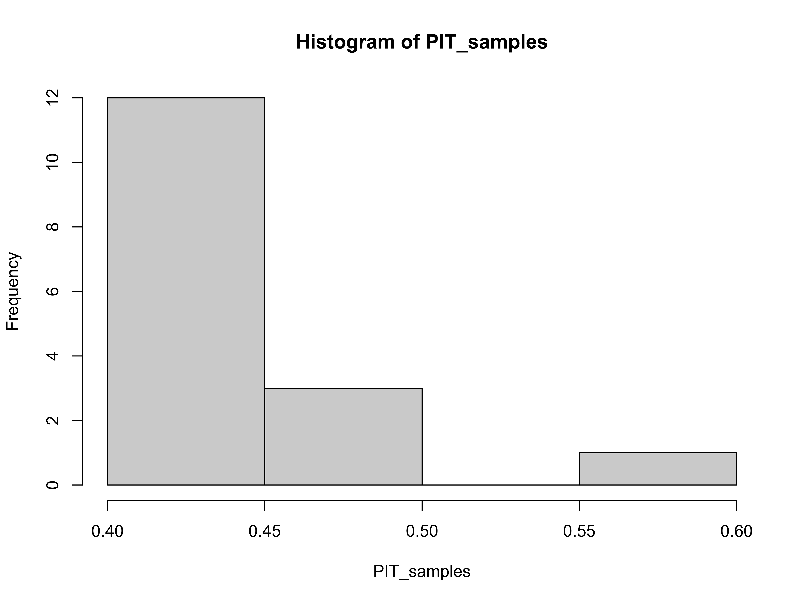
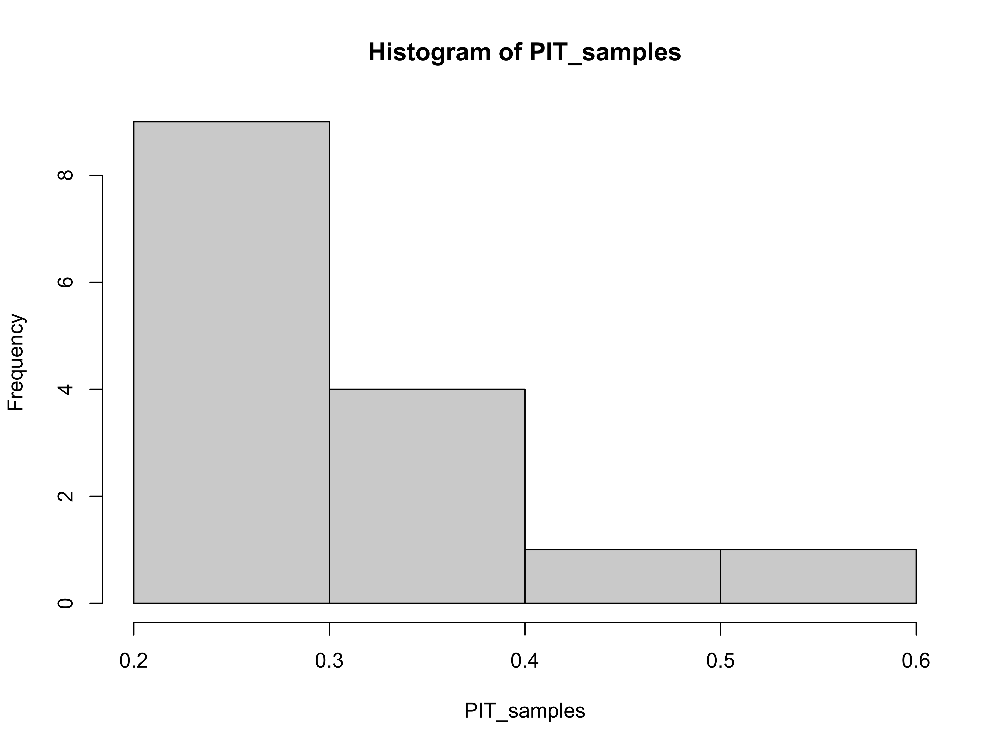
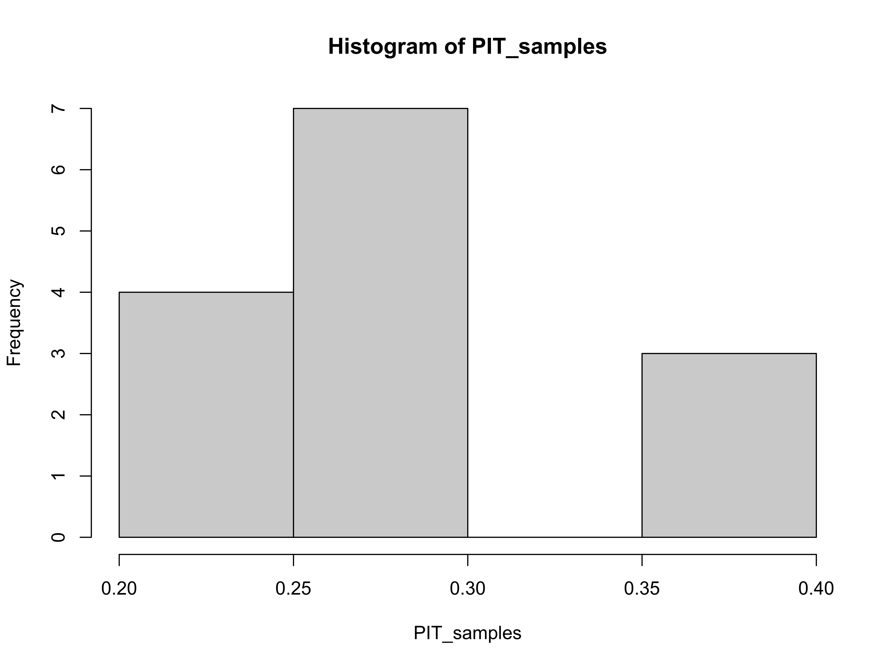
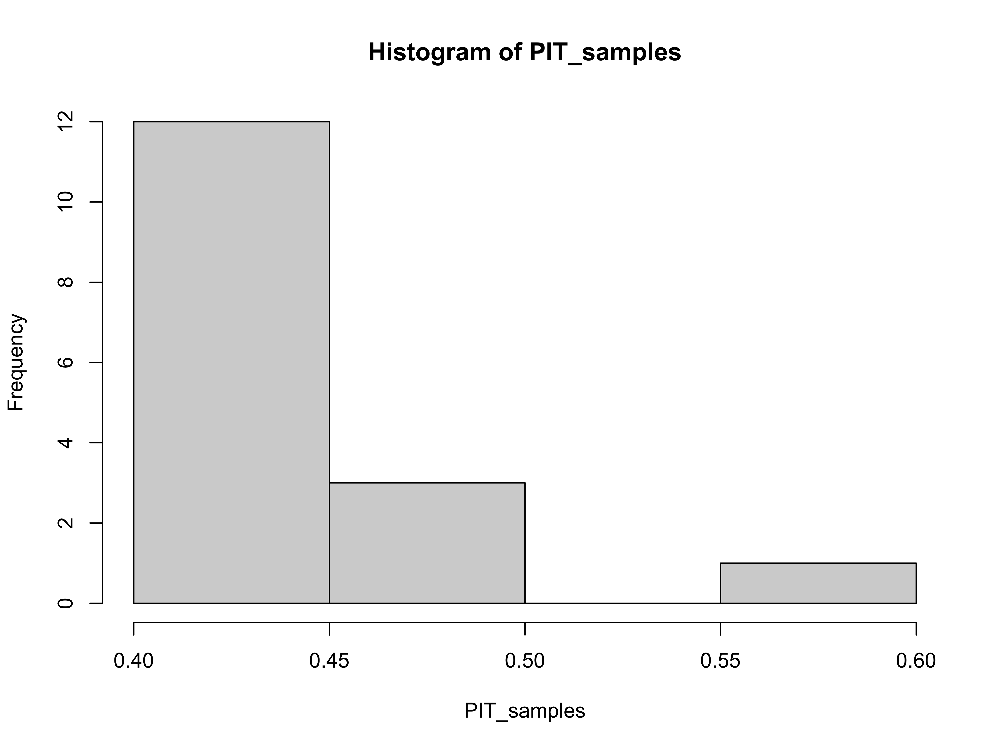
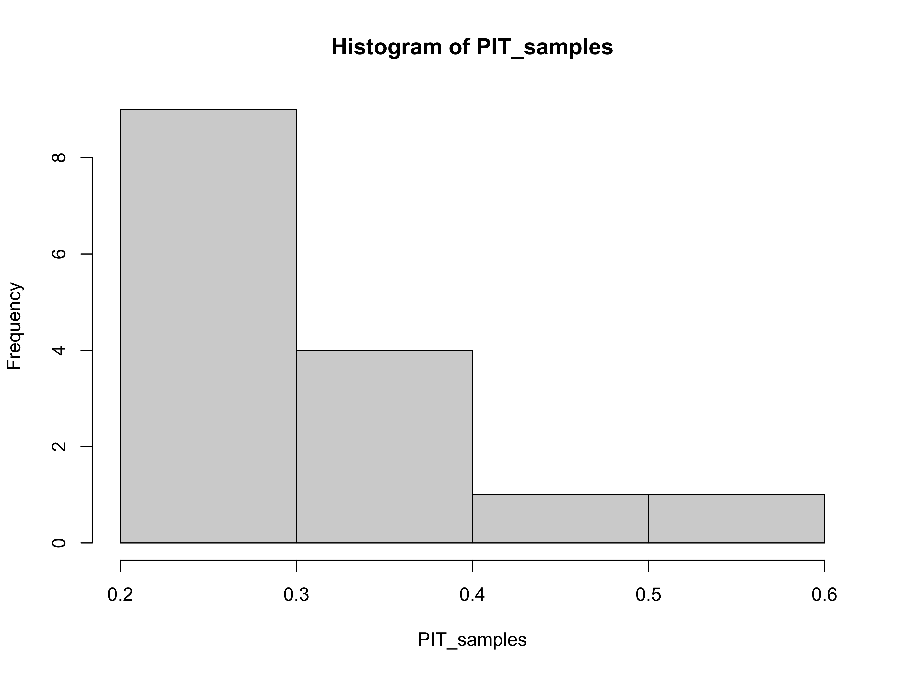
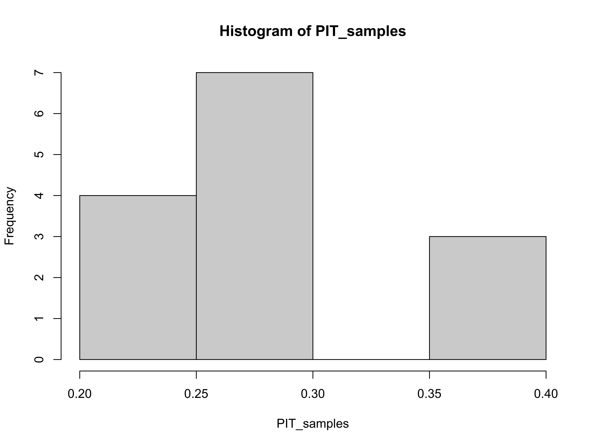

Getting started
introduction.RmdIntroduction
This vignette briefly outlines the functionality of EpiSoon. To get started load the required packages.
- Load the package (
bstsfor models,ggplot2for plotting, andcowplotfor theming)
Forecast Rts, score and plot
- We use an example dataframe built into the package but this could be replaced with your own data.
EpiSoon::example_obs_rts #> rt date #> 1 2.490547 2020-03-01 #> 2 2.442588 2020-03-02 #> 3 2.402473 2020-03-03 #> 4 2.335572 2020-03-04 #> 5 2.266551 2020-03-05 #> 6 2.192293 2020-03-06 #> 7 2.146429 2020-03-07 #> 8 2.104371 2020-03-08 #> 9 2.059281 2020-03-09 #> 10 2.027134 2020-03-10 #> 11 2.014678 2020-03-11 #> 12 1.998946 2020-03-12 #> 13 1.968350 2020-03-13 #> 14 1.947376 2020-03-14 #> 15 1.906984 2020-03-15 #> 16 1.812842 2020-03-16 #> 17 1.718532 2020-03-17 #> 18 1.665646 2020-03-18 #> 19 1.639927 2020-03-19 #> 20 1.633795 2020-03-20 #> 21 1.682025 2020-03-21 #> 22 1.561653 2020-03-22
- Fit a
bstsmodel and produce a Rt forecast. Any appropriately wrapped model can be used (seebsts_modelandfable_modelfor an examples).
rt_forecast <- forecast_rt(EpiSoon::example_obs_rts[1:10, ], model = function(...){EpiSoon::bsts_model(model = function(ss, y){bsts::AddAutoAr(ss, y = y, lags = 10)}, ...)}, horizon = 21, samples = 10) rt_forecast #> # A tibble: 210 x 4 #> sample date rt horizon #> <int> <date> <dbl> <int> #> 1 1 2020-03-11 0.149 1 #> 2 2 2020-03-11 2.09 1 #> 3 3 2020-03-11 1.96 1 #> 4 4 2020-03-11 2.02 1 #> 5 5 2020-03-11 2.10 1 #> 6 6 2020-03-11 1.99 1 #> 7 7 2020-03-11 1.87 1 #> 8 8 2020-03-11 1.98 1 #> 9 9 2020-03-11 1.99 1 #> 10 10 2020-03-11 1.99 1 #> # … with 200 more rows
- Score the forecast
rt_scores <- score_forecast(rt_forecast, EpiSoon::example_obs_rts)
rt_scores #> # A tibble: 12 x 11 #> date horizon dss crps logs bias sharpness calibration median #> <date> <int> <dbl> <dbl> <dbl> <dbl> <dbl> <dbl> <dbl> #> 1 2020-03-11 1 -1.04 0.0397 -1.64 -0.400 0.0449 0.0609 0.0533 #> 2 2020-03-12 2 -0.885 0.0508 -1.12 -0.400 0.124 0.0609 0.0413 #> 3 2020-03-13 3 -0.935 0.0669 -0.819 -0.6 0.0983 0.0609 0.145 #> 4 2020-03-14 4 -0.975 0.0596 -0.906 -0.400 0.149 0.0609 0.0704 #> 5 2020-03-15 5 -0.911 0.0872 -0.419 -0.400 0.204 0.0609 0.228 #> 6 2020-03-16 6 -1.01 0.0742 -0.286 -0.200 0.247 0.0609 0.0562 #> 7 2020-03-17 7 -1.03 0.0832 -0.246 0.200 0.273 0.0609 0.130 #> 8 2020-03-18 8 -1.06 0.0854 -0.205 0.200 0.279 0.0609 0.111 #> 9 2020-03-19 9 -1.05 0.0857 -0.201 0.200 0.302 0.0609 0.103 #> 10 2020-03-20 10 -1.05 0.0927 -0.0474 0 0.314 0.0609 0.0177 #> 11 2020-03-21 11 -1.09 0.114 0.148 -0.400 0.351 0.0609 0.198 #> 12 2020-03-22 12 -1.04 0.0979 0.156 -0.200 0.409 0.0609 0.0523 #> # … with 2 more variables: iqr <dbl>, ci <dbl>
- Summarise the forecast scores
summarise_scores(rt_scores) #> # A tibble: 9 x 8 #> score bottom lower median mean upper top sd #> <chr> <dbl> <dbl> <dbl> <dbl> <dbl> <dbl> <dbl> #> 1 bias -0.545 -0.400 -0.300 -0.20 0.0500 0.200 0.283 #> 2 calibration 0.0609 0.0609 0.0609 0.0609 0.0609 0.0609 0 #> 3 ci 1.59 1.71 1.83 1.80 1.87 1.93 0.114 #> 4 crps 0.0428 0.0650 0.0843 0.0781 0.0885 0.109 0.0209 #> 5 dss -1.08 -1.05 -1.03 -1.01 -0.965 -0.892 0.0655 #> 6 iqr 0.0763 0.185 0.304 0.280 0.357 0.462 0.125 #> 7 logs -1.50 -0.841 -0.266 -0.466 -0.162 0.154 0.547 #> 8 median 0.0242 0.0530 0.0867 0.100 0.133 0.220 0.0650 #> 9 sharpness 0.0595 0.143 0.260 0.233 0.305 0.393 0.110
- Summarise the forecast
summarised_rt_forecast <- summarise_forecast(rt_forecast) summarised_rt_forecast #> # A tibble: 21 x 9 #> date horizon median mean sd bottom lower upper top #> <date> <int> <dbl> <dbl> <dbl> <dbl> <dbl> <dbl> <dbl> #> 1 2020-03-11 1 1.99 1.81 0.588 0.149 1.96 2.02 2.10 #> 2 2020-03-12 2 1.98 1.77 0.628 0 1.97 2.08 2.08 #> 3 2020-03-13 3 1.90 1.73 0.606 0.0383 1.82 1.96 2.14 #> 4 2020-03-14 4 1.91 1.72 0.598 0.0672 1.78 1.95 2.16 #> 5 2020-03-15 5 1.79 1.65 0.605 0 1.71 1.95 2.19 #> 6 2020-03-16 6 1.78 1.65 0.613 0 1.54 1.86 2.15 #> 7 2020-03-17 7 1.78 1.66 0.626 0 1.50 1.84 2.20 #> 8 2020-03-18 8 1.72 1.61 0.617 0 1.45 1.80 2.19 #> 9 2020-03-19 9 1.69 1.59 0.620 0 1.46 1.72 2.24 #> 10 2020-03-20 10 1.62 1.55 0.616 0 1.40 1.71 2.25 #> # … with 11 more rows
- Plot the forecast against observed data
plot_forecast(summarised_rt_forecast, EpiSoon::example_obs_rts)

Forecast cases, score and plot
- Forecasting cases requires the observed cases on which the observed Rt estimates were based
EpiSoon::example_obs_cases #> # A tibble: 63 x 2 #> cases date #> <dbl> <date> #> 1 1 2020-01-20 #> 2 0 2020-01-21 #> 3 1 2020-01-22 #> 4 0 2020-01-23 #> 5 0 2020-01-24 #> 6 0 2020-01-25 #> 7 1 2020-01-26 #> 8 0 2020-01-27 #> 9 0 2020-01-28 #> 10 0 2020-01-29 #> # … with 53 more rows
- It also requires an assumption to be made about the serial interval (defined using probability distribution).
EpiSoon::example_serial_interval #> 1 2 3 4 5 6 7 8 9 10 11 12 14 #> 0.00 0.03 0.25 0.17 0.09 0.15 0.13 0.05 0.05 0.03 0.02 0.01 0.01 0.01
- Forecast cases (using the case data on which the observed Rt estimates were based)
case_forecast <- forecast_cases(EpiSoon::example_obs_cases, rt_forecast, serial_interval = EpiSoon::example_serial_interval) case_forecast #> sample date cases horizon #> 1: 1 2020-03-11 11 1 #> 2: 1 2020-03-12 0 2 #> 3: 1 2020-03-13 3 3 #> 4: 1 2020-03-14 1 4 #> 5: 1 2020-03-15 0 5 #> --- #> 206: 10 2020-03-27 1072 17 #> 207: 10 2020-03-28 1248 18 #> 208: 10 2020-03-29 1236 19 #> 209: 10 2020-03-30 1236 20 #> 210: 10 2020-03-31 1263 21
- Score the cases forecast
case_scores <- score_case_forecast(case_forecast, EpiSoon::example_obs_cases)
case_scores #> # A tibble: 12 x 11 #> date horizon dss crps logs bias sharpness calibration median #> <date> <int> <dbl> <dbl> <dbl> <dbl> <dbl> <dbl> <dbl> #> 1 2020-03-11 1 7.87 6.92 3.96 0.5 14.8 0.00220 23 #> 2 2020-03-12 2 8.34 10.5 4.50 0 30.4 0.00220 7 #> 3 2020-03-13 3 8.65 19.3 5.37 0.6 20.0 0.00220 53 #> 4 2020-03-14 4 8.92 13.0 4.64 0.4 26.7 0.00220 28 #> 5 2020-03-15 5 9.26 21.2 5.04 0.6 37.8 0.00220 58 #> 6 2020-03-16 6 9.92 60.6 6.40 0.6 57.8 0.00220 192 #> 7 2020-03-17 7 10.4 74.9 6.40 0.8 93.4 0.00220 232 #> 8 2020-03-18 8 10.6 74.6 6.39 0.6 102. 0.00220 224 #> 9 2020-03-19 9 11.0 71.5 6.29 0.6 141. 0.00220 190 #> 10 2020-03-20 10 11.5 74.7 6.46 0.4 214. 0.00220 134 #> 11 2020-03-21 11 11.8 68.6 6.61 0 245. 0.00220 6 #> 12 2020-03-22 12 12.9 192. 7.19 0.6 388. 0.00220 553 #> # … with 2 more variables: iqr <dbl>, ci <dbl>
- Summarise the cases scores
summarise_scores(case_scores) #> # A tibble: 9 x 8 #> score bottom lower median mean upper top sd #> <chr> <dbl> <dbl> <dbl> <dbl> <dbl> <dbl> <dbl> #> 1 bias 0 0.4 0.6 0.475 6.00e-1 7.45e-1 0.245 #> 2 calibration 0.00220 0.00220 0.00220 0.00220 2.20e-3 2.20e-3 0 #> 3 ci 154. 250. 441. 578. 7.98e+2 1.37e+3 419. #> 4 crps 7.89 17.7 64.6 57.3 7.46e+1 1.60e+2 51.2 #> 5 dss 8.00 8.85 10.1 10.1 1.11e+1 1.26e+1 1.53 #> 6 iqr 22.8 73.1 275. 250. 3.14e+2 7.39e+2 239. #> 7 logs 4.11 4.94 6.34 5.77 6.42e+0 7.03e+0 1.02 #> 8 median 6.28 26.8 96 142. 2.00e+2 4.65e+2 156. #> 9 sharpness 16.3 29.5 75.6 114. 1.59e+2 3.48e+2 115.
- Summarise the cases forecast
summarised_case_forecast <- summarise_case_forecast(case_forecast) summarised_case_forecast #> # A tibble: 21 x 9 #> date horizon median mean sd bottom lower upper top #> <date> <int> <dbl> <dbl> <dbl> <dbl> <dbl> <dbl> <dbl> #> 1 2020-03-11 1 178. 162. 53.6 11 177 190 190 #> 2 2020-03-12 2 190. 174. 64.6 0 177 215 217 #> 3 2020-03-13 3 234. 215. 79.1 3 222 249 285 #> 4 2020-03-14 4 265 233. 88.9 1 263 294 294 #> 5 2020-03-15 5 302 282 108. 0 283 334 412 #> 6 2020-03-16 6 362 330. 132. 0 323 401 457 #> 7 2020-03-17 7 412 386. 157. 0 355 481 559 #> 8 2020-03-18 8 455 435. 190. 0 399 536 673 #> 9 2020-03-19 9 494. 499. 235. 0 426 616 833 #> 10 2020-03-20 10 521 564. 301. 0 448 709 1035 #> # … with 11 more rows
- Plot the forecast against observed case data
plot_forecast(summarised_case_forecast, EpiSoon::example_obs_cases)
Use iterative fitting to explore a forecast
- To explore the quality of a models forecast it can help to iteratively forecast from each available data point. This is supported in
EpiSoonusing the following:
it_rt_forecast <- iterative_rt_forecast(EpiSoon::example_obs_rts, model = function(...){ EpiSoon::bsts_model(model = function(ss, y){bsts::AddAutoAr(ss, y = y, lags = 10)}, ...) }, horizon = 7, samples = 10, min_points = 4) it_rt_forecast #> # A tibble: 1,260 x 5 #> forecast_date sample date rt horizon #> <chr> <int> <date> <dbl> <int> #> 1 2020-03-05 1 2020-03-06 0.00527 1 #> 2 2020-03-05 2 2020-03-06 2.10 1 #> 3 2020-03-05 3 2020-03-06 2.12 1 #> 4 2020-03-05 4 2020-03-06 2.18 1 #> 5 2020-03-05 5 2020-03-06 2.17 1 #> 6 2020-03-05 6 2020-03-06 0.383 1 #> 7 2020-03-05 7 2020-03-06 2.23 1 #> 8 2020-03-05 8 2020-03-06 2.25 1 #> 9 2020-03-05 9 2020-03-06 2.16 1 #> 10 2020-03-05 10 2020-03-06 2.20 1 #> # … with 1,250 more rows
- We can then iteratively forecast cases using the following:
it_cases_forecast <- iterative_case_forecast(it_fit_samples = it_rt_forecast, cases = EpiSoon::example_obs_cases, serial_interval = EpiSoon::example_serial_interval) it_cases_forecast #> forecast_date sample date cases horizon #> 1: 2020-03-05 1 2020-03-06 0 1 #> 2: 2020-03-05 1 2020-03-07 0 2 #> 3: 2020-03-05 1 2020-03-08 0 3 #> 4: 2020-03-05 1 2020-03-09 2 4 #> 5: 2020-03-05 1 2020-03-10 0 5 #> --- #> 1256: 2020-03-22 10 2020-03-25 687 3 #> 1257: 2020-03-22 10 2020-03-26 837 4 #> 1258: 2020-03-22 10 2020-03-27 891 5 #> 1259: 2020-03-22 10 2020-03-28 977 6 #> 1260: 2020-03-22 10 2020-03-29 1181 7
- All functionality shown above is also supported for iterative forecasting.
Evaluate a model
In real world use we are likely to want to evaluate a model by iteratively forecasting Rts and cases, summarising these forecasts, scoring them and then returning them in a sensible format. These steps are all contained in the evaluate_model function.
model_eval <- evaluate_model(EpiSoon::example_obs_rts, EpiSoon::example_obs_cases, model = function(...){ EpiSoon::bsts_model(model = function(ss, y){bsts::AddAutoAr(ss, y = y, lags = 10)}, ...) }, horizon = 21, samples = 10, serial_interval = EpiSoon::example_serial_interval)


 


model_eval #> $forecast_rts #> # A tibble: 399 x 10 #> forecast_date date horizon median mean sd bottom lower upper top #> <chr> <date> <int> <dbl> <dbl> <dbl> <dbl> <dbl> <dbl> <dbl> #> 1 2020-03-04 2020-03-05 1 2.25 2.06 0.731 0 2.22 2.31 2.54 #> 2 2020-03-04 2020-03-06 2 2.21 2.03 0.715 0.0543 2.07 2.25 2.67 #> 3 2020-03-04 2020-03-07 3 2.07 2.00 0.760 0 2.01 2.29 2.94 #> 4 2020-03-04 2020-03-08 4 2.02 1.94 0.731 0 1.99 2.39 2.69 #> 5 2020-03-04 2020-03-09 5 1.97 1.90 0.705 0.0766 1.77 2.22 2.73 #> 6 2020-03-04 2020-03-10 6 1.87 1.83 0.717 0.00419 1.69 2.14 2.70 #> 7 2020-03-04 2020-03-11 7 1.78 1.76 0.706 0 1.62 1.99 2.67 #> 8 2020-03-04 2020-03-12 8 1.77 1.73 0.714 0 1.54 1.93 2.73 #> 9 2020-03-04 2020-03-13 9 1.75 1.70 0.710 0 1.44 1.94 2.66 #> 10 2020-03-04 2020-03-14 10 1.69 1.65 0.705 0 1.38 1.87 2.70 #> # … with 389 more rows #> #> $rt_scores #> # A tibble: 170 x 12 #> forecast_date date horizon dss crps logs bias sharpness #> <chr> <date> <int> <dbl> <dbl> <dbl> <dbl> <dbl> #> 1 2020-03-04 2020-03-05 1 -0.645 0.0395 -1.66 -0.200 0.0631 #> 2 2020-03-04 2020-03-06 2 -0.719 0.0560 -0.859 0 0.155 #> 3 2020-03-04 2020-03-07 3 -0.613 0.0850 -0.389 -0.200 0.224 #> 4 2020-03-04 2020-03-08 4 -0.678 0.101 -0.0641 -0.200 0.307 #> 5 2020-03-04 2020-03-09 5 -0.745 0.111 0.0608 -0.200 0.333 #> 6 2020-03-04 2020-03-10 6 -0.690 0.125 0.141 -0.200 0.331 #> 7 2020-03-04 2020-03-11 7 -0.660 0.144 0.284 -0.400 0.279 #> 8 2020-03-04 2020-03-12 8 -0.623 0.155 0.345 -0.400 0.312 #> 9 2020-03-04 2020-03-13 9 -0.635 0.154 0.394 -0.400 0.428 #> 10 2020-03-04 2020-03-14 10 -0.606 0.169 0.431 -0.400 0.403 #> # … with 160 more rows, and 4 more variables: calibration <dbl>, median <dbl>, #> # iqr <dbl>, ci <dbl> #> #> $forecast_cases #> # A tibble: 171 x 10 #> forecast_date date horizon median mean sd bottom lower upper top #> <chr> <date> <int> <dbl> <dbl> <dbl> <dbl> <dbl> <dbl> <dbl> #> 1 2020-03-04 2020-03-05 1 66 63 24.4 0 59 71 89 #> 2 2020-03-04 2020-03-06 2 83.5 79.3 28.0 2 80 89 97 #> 3 2020-03-04 2020-03-07 3 95 89.9 39.7 0 82 104 159 #> 4 2020-03-04 2020-03-08 4 118 115. 48.1 0 101 136 185 #> 5 2020-03-04 2020-03-09 5 135 132. 62.2 2 114 171 242 #> 6 2020-03-04 2020-03-10 6 152. 158. 81.1 0 144 214 313 #> 7 2020-03-04 2020-03-11 7 174. 185. 103. 0 144 205 401 #> 8 2020-03-04 2020-03-12 8 158. 208. 145. 0 121 233 531 #> 9 2020-03-04 2020-03-13 9 200. 264. 181. 0 166 276 682 #> 10 2020-03-04 2020-03-14 10 209 300. 245. 0 180 348 897 #> # … with 161 more rows #> #> $case_scores #> # A tibble: 170 x 13 #> sample forecast_date date horizon dss crps logs bias sharpness #> <chr> <chr> <date> <int> <dbl> <dbl> <dbl> <dbl> <dbl> #> 1 1 2020-03-04 2020-03-05 1 6.29 3.7 3.48 0.200 9.64 #> 2 1 2020-03-04 2020-03-06 2 6.62 9.77 4.43 0.8 6.67 #> 3 1 2020-03-04 2020-03-07 3 7.26 6.51 4.07 0.200 17.8 #> 4 1 2020-03-04 2020-03-08 4 7.73 11.2 4.59 0.4 25.9 #> 5 1 2020-03-04 2020-03-09 5 8.23 14.2 4.95 0.200 46.0 #> 6 1 2020-03-04 2020-03-10 6 8.73 15.7 5.16 0.4 58.6 #> 7 1 2020-03-04 2020-03-11 7 9.20 16.2 4.99 0 45.2 #> 8 1 2020-03-04 2020-03-12 8 9.86 31.0 5.69 -0.200 83.0 #> 9 1 2020-03-04 2020-03-13 9 10.4 27.9 5.66 -0.200 81.5 #> 10 1 2020-03-04 2020-03-14 10 10.9 45.0 6.03 -0.200 129. #> # … with 160 more rows, and 4 more variables: calibration <dbl>, median <dbl>, #> # iqr <dbl>, ci <dbl>
- All functionality outlined above can be applied to this output but a special plotting function (
plot_forecast_evaluation) is also provided. First evaluate the Rt forecast against observed values.
plot_forecast_evaluation(model_eval$forecast_rts, EpiSoon::example_obs_rts, horizon_to_plot = 7)

- Then evaluate forecast cases against observed values.
plot_forecast_evaluation(model_eval$forecast_cases, EpiSoon::example_obs_cases, horizon_to_plot = 7)

Wrapper functions
EpiSoon provides several wrapper functions (compare_models and compare_timeseries). These both wrap evaluate_model and can be used to rapidly explore several forecasting models (compare_models) against multiple time series (compare_timeseries). All lower level summary and plotting functions can be then used with the output of these wrappers to explore the results. See the function documentation for further details.
Supporting generic modelling packages
EpiSoon supports the use of generic forecasting models if they are used in a wrapper that accepts a standardised set of inputs and outputs its forecast in the form the package expects. Examples of model wrappers are those for the bsts and fable packages (bsts_model and fable_model). See the examples and documentation for fable_model for further details.